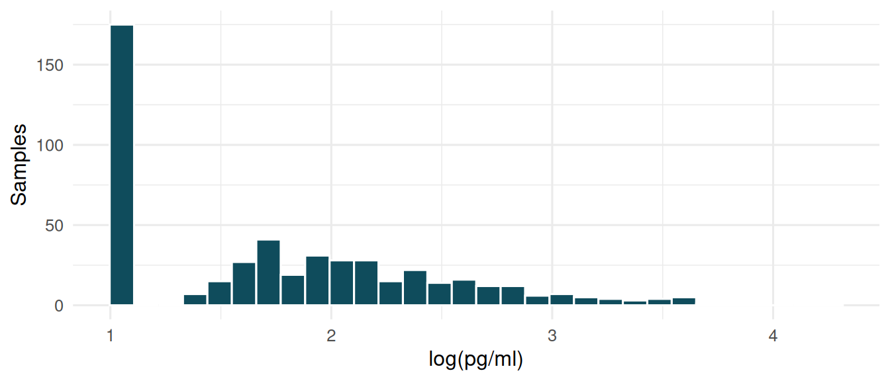

Values below the detection limit, skewed concentrations and 27 tests at once, worked through on simulated plasma data
Statistics
R
Cytokines
Cytokine panels measure dozens of analytes at once, and the usual approach (a t-test per cytokine, stars on anything below 0.05) can both miss real effects and report false ones. Seven decisions, demonstrated on simulated plasma data where the true effects are known.
Author
Devon Allies
Published
November 20, 2026
A multiplex cytokine panel measures dozens of analytes in every sample. The tempting analysis is quick: run a t-test on each cytokine, put a star on everything below 0.05, and write up the stars. But cytokine data breaks the assumptions behind that approach in several ways at once, and the result can both miss real effects and report false ones.
This article works through seven decisions that change the answer, using a simulated dataset where the truth is known, because the effects were built into it.
ImportantSimulated data
Every value here is simulated: no row describes a real person, and none of the results describe real patients. The dataset has 27 cytokines measured in plasma from the 500 fictional participants of my tutorial series, at baseline, month 3 and month 6. Its layout copies a real multiplex export, including the codes for values outside the assay’s range, but the numbers are invented.
The code for every step is folded away: click Show the code above a table or figure to see how it was made.
Show the code: packages and data
library(readxl)library(readr)library(dplyr)library(tidyr)library(stringr)library(ggplot2)library(ggrepel)library(kableExtra)library(here)# Every table in the article goes through this, so they share one styleshow_table <-function(x, ...) {kbl(x, ...) |>kable_styling(bootstrap_options =c("striped", "hover", "condensed"),full_width =FALSE, position ="left")}plasma_raw <-read_excel(here("tutorials", "data", "bal_plasma_cytokines.xlsx"),sheet ="Plasma", col_types ="text")metadata <-read_csv(here("tutorials", "data", "bal_metadata_clean.csv"), show_col_types =FALSE)cytokines <-setdiff(names(plasma_raw), c("Pt_ID", "Visit", "Notes"))theme_set(theme_minimal(base_size =12))teal <-"#0F4C5C"orange <-"#E36414"
1. Read what the assay actually reported
Open a multiplex export and many cells aren’t numbers. Each cytokine has a range the assay can measure. Values below the lower limit come back as codes such as OOR <4.8 (“out of range, below 4.8 pg/ml”), and values above the upper limit as OOR >30432.0. The same code is often written several ways in one file:
Table 1: Four samples with IL-10, IL-13 and GM-CSF all below the detection limit, exactly as the assay reported them (simulated data).
Pt_ID
Visit
IL-10
IL-13
GM-CSF
SP00431
Month3
OOR <4.8
OOR <4.05
<4.83
SP07270
Month3
OOR <4.8
< 4.05
OOR <4.83
SP10968
Baseline
OOR <4.8
<4.05
OOR <4.83
SP11648
Month6
OOR <4.8
OOR <4.05
<4.83
Before choosing any test, turn the codes into information instead of throwing them away. For each value, record whether it was below or above the limit, and what the limit was:
Show the code: parse the out-of-range codes
plasma <- plasma_raw |>mutate(Pt_ID =toupper(Pt_ID)) |>pivot_longer(all_of(cytokines), names_to ="cytokine", values_to ="reported") |>mutate(below =str_detect(reported, "<"),above =str_detect(reported, ">"),limit =as.numeric(str_extract(reported, "[0-9.]+$")),value =suppressWarnings(as.numeric(reported)) ) |>inner_join(select(metadata, pt_id, tb_diagnosis, hiv_status), by =c("Pt_ID"="pt_id"))# Each cytokine's lower limit of detection, taken from its own codeslod <- plasma |>filter(below) |>distinct(cytokine, lod = limit)plasma <- plasma |>left_join(lod, by ="cytokine") |>mutate(cytokine =factor(cytokine, levels = cytokines))
Figure 1: Share of baseline samples below the lower limit of detection, by cytokine (simulated data).
In this dataset, between 0% and 35% of baseline values fall below the limit, depending on the cytokine (Figure 1). That’s too many to ignore.
2. Think twice before dropping values below the detection limit
The easiest thing to do with OOR <4.8 is to treat it as missing. It can also do the most damage. A value below the limit isn’t entirely unknown: we know it’s low. Dropping it removes exactly the low values, and if one group has more of them, it removes the difference you’re looking for.
IL-10 shows how much this matters. The simulation includes a real increase in IL-10 in the active TB group. Compare the four diagnosis groups at baseline with a Kruskal-Wallis test, first dropping the values below the limit, then keeping them:
Show the code: IL-10, dropped vs kept
il10 <- plasma |>filter(Visit =="Baseline", cytokine =="IL-10")# 1. Below-limit values treated as missing (dropped)dropped <-kruskal.test(value ~ tb_diagnosis, data = il10)# 2. Below-limit values kept as the lowest valueskept <-kruskal.test(if_else(below, 0, value) ~ tb_diagnosis, data = il10)tibble(approach =c("Below-limit values dropped", "Below-limit values kept as lowest"),p_value =format.pval(c(dropped$p.value, kept$p.value), digits =2)) |>show_table(col.names =c("Approach", "Kruskal-Wallis p"), align ="lr")
Table 2: Kruskal-Wallis test of baseline IL-10 across the four diagnosis groups, with values below the limit dropped or kept as the lowest values (simulated data).
Approach
Kruskal-Wallis p
Below-limit values dropped
0.14
Below-limit values kept as lowest
2.5e-05
Dropped, the difference disappears (p = 0.14). Kept, it’s clear (p < 0.001; Table 2). The reason is visible in how often IL-10 was detected at all:
Table 3: Share of baseline samples in which IL-10 was detected, by diagnosis group (simulated data).
Diagnosis
Samples
Detected (%)
Active TB
164
85
Control
109
68
Indeterminate
74
73
LTBI
153
63
IL-10 was detected in 85% of the active TB group but only 68% of controls (Table 3). Dropping the undetected values throws away that difference.
If you keep them, the options depend on how many values are below the limit and which method you use:
Rank-based tests (Wilcoxon, Kruskal-Wallis) handle it neatly. Every value below the limit is smaller than every detected value, so they all tie for the lowest ranks. It doesn’t matter what number you put in for them, as long as it’s below the limit: the test gives the same answer. That’s why replacing them with 0 above works.
Simple substitution with the limit divided by √2 or by 2 is common when you need means or fold changes. Hornung and Reed suggested the limit ÷ √2 for data that isn’t highly skewed, and the limit ÷ 2 when it is (Hornung and Reed, 1990).
Methods designed for censored data are more principled. Substituting a value and then running t-tests has repeatedly been shown to give inaccurate results, and survival-analysis methods built for “less than” values avoid the guess altogether (Helsel, 2012). Multiple imputation is another option: each value below the limit is filled in several times with plausible values below the limit, and the results are combined so the uncertainty about the true values is carried into the analysis. In simulations with 10% to 60% of values below the limit, it gave less biased estimates than substitution, particularly as the share below the limit grew (Zhang and Guo, 2012).
When most values are below the limit, the concentration carries little information. Analyse whether the cytokine was detected or not instead, with a chi-square or Fisher’s exact test.
What I’m doing in my master’s. My master’s analysis, which is still under way, takes a different approach. First, I leave out any cytokine with more than 40–50% of its values out of range or missing, because so little of it has actually been measured. Then, for the cytokines I keep, I leave the OOR values out of the tests and don’t substitute anything for them. The true values aren’t known, and I don’t want a guessed number to skew the results.
This is one approach among several, and it isn’t universally accepted. Each choice has a cost: leaving the values out can hide a real difference, as IL-10 shows above, while substituting a value means analysing a number nobody measured. Section 5 runs the whole panel both ways, so you can see what the choice changes.
Figure 2: Baseline IP-10 in pg/ml (left) and on a log scale (right). The log-transformed values are close to symmetric (simulated data).
The histogram is the first check. The second is a formal test of normality, the Shapiro-Wilk test, whose null hypothesis is that the values come from a normal distribution: a small p-value means they probably don’t.
Table 4: Shapiro-Wilk test of baseline IP-10 on the original and log scales (simulated data).
Scale
Shapiro-Wilk p
Original (pg/ml)
<2e-16
Logged
0.25
On the original scale, a t-test’s assumption of roughly normal values fails badly (Shapiro-Wilk p < 0.001; Table 4). After a log transformation the values are close to normal (p = 0.25), and the parametric tests are back on the table (Childs, Hindle and Warren, 2021, sec.24.4).
IP-10 is one of the easy cases, though. Run the same test on every cytokine:
Show the code: Shapiro-Wilk test on all 27 cytokines
Table 5: Cytokines whose baseline values look normal (Shapiro-Wilk p > 0.05), grouped by the share of values below the detection limit (simulated data).
Values below the limit
Cytokines
Normal, original scale
Normal, logged
None
12
0
12
Under 1%
3
0
3
1% or more
12
0
0
None of the 27 cytokines look normal on the original scale (Table 5). After logging, 15 do: the 12 with no values below the detection limit, and 3 with only one or two. The other 12, each with 5% or more of its values below the limit, still fail after logging, and the histogram shows why. IL-13, the cytokine with the most values below the limit, has a spike where every substituted value sits at the same number (Figure 3):
Show the code: histogram of logged IL-13
plasma |>filter(Visit =="Baseline", cytokine =="IL-13") |>ggplot(aes(log(conc))) +geom_histogram(bins =30, fill = teal, colour ="white") +labs(x ="log(pg/ml)", y ="Samples")

Figure 3: Baseline IL-13 on a log scale. The spike on the left is the 35% of samples below the detection limit, all substituted with the same value (simulated data).
No transformation can spread out values that were all given the same number, and leaving them out doesn’t help either: the detected values alone stop sharply at the limit. For cytokines with values below the limit, rank-based tests are the safer route.
Use the histogram and the test together. With hundreds of samples, Shapiro-Wilk can flag departures from normality too small to matter; with a handful, it can miss large ones. The picture shows what the p-value can’t: whether the problem is a long tail, a spike or a cut-off.
Logging also matches how cytokine differences are usually described: as ratios (“twice as high”) rather than differences in pg/ml. A t-test on log values compares geometric means, and its result transforms back into a ratio with a confidence interval (Childs, Hindle and Warren, 2021, sec.24.4). So there are two sound routes:
Log the values, then use t-tests or ANOVA, and report ratios.
Use rank-based tests on the original values, which need no transformation and handle the below-limit values automatically.
Running a t-test on the raw pg/ml values isn’t one of them.
Table 6: Tests for common cytokine-panel designs, on logged values or on ranks.
Question
Logged values
Original values (ranks)
Two groups (active TB vs controls)
Welch’s t-test
Wilcoxon rank-sum
Three or more groups (all four diagnoses)
One-way ANOVA
Kruskal-Wallis
Same people at two visits
Paired t-test on the log differences
Wilcoxon signed-rank
Detected or not, by group
Chi-square, or Fisher’s exact for small counts
—
Repeated visits deserve particular care. The same participants were sampled at baseline, month 3 and month 6, so their samples aren’t independent. Comparing the visits as if they came from different people wastes the design. In the simulation, IP-10 falls during follow-up in the active TB group. Compare baseline with month 6 for the participants who have both:
Table 7: IP-10 at month 6 compared with baseline in the active TB group: ratio of geometric means with its 95% CI, and p-values from paired and unpaired t-tests on the log values (simulated data).
Participants
Ratio (month 6 ÷ baseline)
95% CI low
95% CI high
p, paired
p, unpaired
93
0.44
0.37
0.51
3.7e-18
5.5e-11
By month 6, IP-10 was on average 0.44 times its baseline level (95% CI 0.37 to 0.51; Table 7). The paired test’s p-value is about ten million times smaller than the unpaired one on the same data, because comparing each person with themselves removes the person-to-person variation (Childs, Hindle and Warren, 2021, sec.20.2).
5. 27 cytokines means 27 tests
Each test at α = 0.05 has a 5% chance of a false positive. Run 27 of them on data with no real differences at all, and you’d expect more than one “significant” cytokine by chance alone (27 × 0.05 ≈ 1.4).
Compare active TB with controls at baseline, one Wilcoxon test per cytokine, then correct the p-values two ways:
Bonferroni multiplies each p-value by the number of tests. It strictly limits the chance of even one false positive, but it’s very cautious (Vu and Harrington, 2020, sec.5.5).
Benjamini-Hochberg controls the false discovery rate: the expected proportion of false positives among the cytokines you call significant (Benjamini and Hochberg, 1995). It’s less cautious, which is why it’s widely used when many outcomes are tested at once.
Show the code: one Wilcoxon test per cytokine, then correct
screen <- plasma |>filter(Visit =="Baseline", tb_diagnosis %in%c("Active TB", "Control")) |>group_by(cytokine) |>summarise(ratio =exp(mean(log(conc[tb_diagnosis =="Active TB"])) -mean(log(conc[tb_diagnosis =="Control"]))),p =wilcox.test(conc ~ tb_diagnosis, exact =FALSE)$p.value,.groups ="drop" ) |>mutate(p_bonferroni =p.adjust(p, method ="bonferroni"),q_bh =p.adjust(p, method ="BH") ) |>arrange(p)# p-values too small for the computer to store come out as 0; show them as "< 1e-16"screen |>head(9) |>mutate(ratio =round(ratio, 2),across(c(p, p_bonferroni, q_bh), \(x) format.pval(x, digits =2, eps =1e-16))) |>show_table(col.names =c("Cytokine", "Ratio (active TB ÷ controls)", "p","p, Bonferroni", "q, Benjamini-Hochberg"))
Table 8: The nine cytokines with the smallest p-values, active TB vs controls at baseline: ratio of geometric means, Wilcoxon p-value, and Bonferroni and Benjamini-Hochberg corrected values (simulated data).
Table 9: Number of cytokines significant at 0.05 before and after correcting for 27 tests (simulated data).
Unadjusted
Bonferroni
Benjamini-Hochberg
8
7
7
Eight cytokines are significant before correction, and seven after either correction (Table 9). The one that drops out, Eotaxin (p = 0.03 in Table 8), is a cytokine with no effect in the simulation: a false positive that the uncorrected analysis would have reported as a finding. The seven that survive are exactly the seven with a built-in difference.
Correction doesn’t make a panel foolproof. The false discovery rate is controlled on average, so some false positives can still get through, and every correction trades some power for fewer false alarms. But reporting uncorrected p-values from 27 tests reports noise as findings.
The same screen with the OOR values left out
Here is the analysis from Table 8 repeated the way I’m handling it in my master’s: OOR values left out of the tests, nothing substituted.
Show the code: repeat the screen with OOR values left out
Table 10: Active TB vs controls at baseline, with OOR values kept (as in Table 8) and left out. Only cytokines with OOR values are shown; the rest give identical results either way. Ratios are of geometric means; q-values are Benjamini-Hochberg corrected across all 27 cytokines (simulated data).
Ratio
p
q
Cytokine
OOR (%)
Effect built in
Kept
Left out
Kept
Left out
Kept
Left out
IL-13
38.5
No
1.09
1.18
0.32
0.016
0.63
0.061
GM-CSF
26.7
No
0.93
0.89
0.38
0.094
0.64
0.26
IL-10
22.0
Yes
1.44
1.20
0.00063
0.12
0.0024
0.27
IL-12(p70)
20.9
No
1.05
1.05
0.58
0.48
0.78
0.62
MIP-1a
16.1
No
0.98
1.10
0.74
0.4
0.81
0.61
IL-5
14.7
No
1.02
1.05
0.83
0.59
0.86
0.67
IL-6
11.0
Yes
1.92
1.54
2.6e-09
1.2e-05
1.4e-08
6.3e-05
IL-1b
11.0
No
1.10
1.18
0.33
0.096
0.63
0.26
IL-7
8.4
No
1.13
1.05
0.091
0.32
0.27
0.55
IL-4
6.6
No
1.02
1.05
0.73
0.51
0.81
0.62
IL-2
4.8
No
1.01
0.93
0.72
0.3
0.81
0.55
IL-17A
4.8
No
0.98
0.98
1
0.96
1
0.96
TNF-a
0.4
Yes
1.87
1.83
2e-10
3.5e-10
1.3e-09
2.3e-09
IL-9
0.4
No
1.13
1.15
0.13
0.11
0.36
0.27
RANTES
0.4
No
1.14
1.13
0.46
0.51
0.71
0.62
With the OOR values left out, Benjamini-Hochberg finds 6 significant cytokines instead of 7, and three results change:
IL-10 is missed. Its real effect is no longer significant (q = 0.27, against 0.002 with the values kept).
IL-6’s ratio shrinks from 1.92 to 1.54. It’s still significant, but the effect looks smaller than the one built into the simulation, because the ratio now compares only the samples where IL-6 was detected.
IL-13 moves towards a false positive. It has no effect in the simulation, but its uncorrected p-value falls from 0.32 to 0.016. Correction keeps it out (q = 0.06), only just.
For cytokines with only a few percent OOR, such as IL-2 and IL-17A, the two approaches barely differ. The gap grows with the share of OOR values. Whichever approach you choose, say which one in the methods, and how many values it affected.
6. Remember that cytokines move together
The 27 tests aren’t independent. Cytokines measured in the same samples are often correlated, and this simulation includes groups of cytokines that rise and fall together (Figure 4):
Figure 4: Spearman correlations between baseline cytokine concentrations (simulated data).
The heatmap uses Spearman’s correlation, which works on ranks, so the values don’t need to be logged or z-scored first: either step would leave every rank, and so the heatmap, unchanged. Those steps matter for a different kind of heatmap, one showing the concentrations themselves (samples by cytokines). There, each cytokine is logged and then z-scored so that cytokines measured in tens and in thousands of pg/ml share one colour scale. Z-scoring only rescales the values; it doesn’t make them any more normal.
Two practical consequences:
Seven significant cytokines aren’t seven independent discoveries. IP-10 and IFN-y correlate (ρ ≈ 0.44 here), so finding both is partly finding the same thing twice. Describe them as a pattern.
Correlated outcomes suit methods that look at all the cytokines together, such as principal component analysis, rather than only one test at a time. My R and Python workflow project shows PCA on a much larger panel.
7. Report how big, not just how significant
A table of stars says nothing about size. For each cytokine, report the ratio between groups (from the log scale) with its confidence interval, alongside the corrected p-value. A volcano plot shows both at once for the whole panel (Figure 5):
Figure 5: Active TB compared with controls at baseline: ratio of geometric means (x, log2 scale) against Benjamini-Hochberg corrected significance (y). Labelled cytokines have q < 0.05; IP-10’s q-value is below 1e-16 and is drawn at that level (simulated data).
The confidence interval for each ratio comes from a t-test on the log values, transformed back (Table 11):
Table 11: Ratio of geometric means, active TB vs controls at baseline, with 95% CIs from t-tests on the log values (simulated data).
Cytokine
Ratio (active TB ÷ controls)
95% CI low
95% CI high
IL-10
1.44
1.18
1.76
Eotaxin
1.24
1.04
1.47
IFN-y
2.46
2.04
2.97
IP-10
3.45
2.83
4.21
“IP-10 was 3.4 times higher in active TB than in controls (95% CI 2.8 to 4.2)” tells a reader far more than “IP-10 ***“.
Two more things stand out. Eotaxin’s interval (1.04 to 1.47) excludes 1, so on its own this single test looks convincing; it’s only once you account for the 27 tests that it drops out, as section 5 showed. And IL-10’s ratio uses substituted values for the 22% of these samples below the limit, so it deserves a caveat in any write-up.
A checklist for your next panel
Parse the out-of-range codes. Record below and above the limit; don’t let them become missing values.
Think twice before dropping values below the detection limit. Dropping them can hide real differences. To keep them, use rank-based tests, a stated substitution or censored-data methods; analyse detected vs not when most values are below the limit. Whichever you choose, report it.
Log the concentrations, or use rank-based tests. Don’t run t-tests on raw pg/ml values.
Match the test to the design, and use paired tests for repeated visits on the same people.
Correct for the number of cytokines tested, with Benjamini-Hochberg or Bonferroni.
Treat correlated cytokines as patterns, not independent findings.
Report ratios with confidence intervals, not just stars.
About the simulation
So that you can check the results above against the truth, these are the effects built into the simulated data (on the log scale, as multiples of each cytokine’s typical level):
Active TB: higher IP-10, IFN-y, IL-1ra, IL-6, TNF-a, IL-10 and MCP-1, fading at month 3 and further by month 6.
HIV: higher IP-10, IL-10 and TNF-a.
Every other cytokine: no difference between any groups.
The simulation script, scripts/simulate_plasma_cytokines.py, is in the site’s GitHub repository.
References
Benjamini, Y. and Hochberg, Y., 1995. Controlling the false discovery rate: A practical and powerful approach to multiple testing. Journal of the Royal Statistical Society: Series B (Methodological), 57(1), pp.289–300. https://doi.org/10.1111/j.2517-6161.1995.tb02031.x.
Childs, D.Z., Hindle, B.J. and Warren, P.H., 2021. APS 240: Data analysis and statistics with R. [online] Available at: <https://dzchilds.github.io/stats-for-bio/>.
Helsel, D.R., 2012. Statistics for censored environmental data using Minitab and R. 2nd ed. Hoboken, NJ: John Wiley & Sons. https://doi.org/10.1002/9781118162729.
Hornung, R.W. and Reed, L.D., 1990. Estimation of average concentration in the presence of nondetectable values. Applied Occupational and Environmental Hygiene, 5(1), pp.46–51. https://doi.org/10.1080/1047322X.1990.10389587.
Vu, J. and Harrington, D., 2020. Introductory statistics for the life and biomedical sciences. 1st ed. [online] OpenIntro. Available at: <https://www.openintro.org/book/biostat/>.
Zhang, S. and Guo, Y., 2012. Multiple imputation for cytokine/metabolite assay data with missing data and values below detectable limits of quantification. In: JSM proceedings, biopharmaceutical section. Alexandria, VA: American Statistical Association. pp.725–736.
List of figures
Figure 1: Share of baseline samples below the detection limit, by cytokine
Figure 2: Baseline IP-10 on the original and log scales
Figure 3: Baseline IL-13 on a log scale, showing the spike of substituted values
Figure 4: Spearman correlations between baseline cytokine concentrations
Figure 5: Volcano plot of active TB compared with controls at baseline
List of tables
Table 1: Out-of-range codes as reported by the assay
Table 2: IL-10 across diagnosis groups, below-limit values dropped or kept